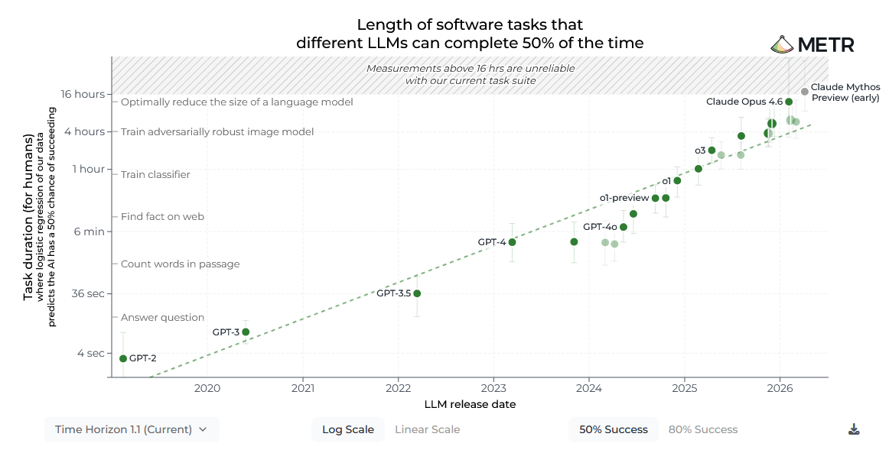

Ülevaade AI arengusuundadest - osa 1/3
Viimasel ajal tundub AI olevat täitnud kõik uudiskanalite pealkirjad. Aga kuidas eristada tõde liialdustest? Uudisteartiklid on tihti segased või kallutatud. Kõrvuti võib leida artikleid pealkirjadega "AI võtab üle kõik töökohad järgneva 2 aasta jooksul" ja "AI mull on kohe lõhkemas". On selge, et ekstreemsemad pealkirjad müüvad paremini - nii ühele või teisele poole tõde kallutades.
Lisaks võib AI mudelite progress tunduda ebakorrapärane ka spetsialisti vaatenurgast - kiire arengu perioodid vahelduvad aeglastega. Et saada selgemat ülevaadet, tuleb olukorda vaadata kaugemalt ning üle pikema ajaraami. See on täpselt see, mida organisatsioon METR (mittetulunduslik uurimisinstituut Californias) on oma uurimistöös teinud.
Arengu mõõtmine
METR märkas, et üks AI mudelite probleemidest (eriti LLM-de puhul) on järjepidavuse puudumine - neil võib olla väga raske läbida pikaajalisi või mitme-sammulisi ülesandeid ilma järge kaotamata. See tähelepanek aitas neil defineerida ühe efektiivse mõõdupuu: kui ajaliselt keerukate (inimesel ülesande lahendamiseks kuluva aja mõttes) ülesannetega saab mudel hakkama teatud fikseeritud tõenäosusega (nt 50% või 80%)? Nad andsid sellele mõõdikule nime ülesannete läbimise ajahorisont (i.k. "task completion time horizon").
METR koostas nimekirja 228 erinevast ülesandest (tarkvaraarenduse, küberturvalisuse, üldise loogika, ja masinõppe valdkondadest). Ülesanded varieeruvad triviaalsetest (lahendatav sekunditega) kuni ülesanneteni, mille lahendamiseks võib valdkonna spetsialistil kuluda mitmeid päevi.
Siin on mõned näited ülesannetest tarkvara arenduse valdkonnast:
find_shell_script(3 sekundit) - “Milline neist failidest on shell'i skript?” Valikud: “run.sh”, “run.txt”, “run.py”, “run.md”wikipedia_research(1 minut) - Otsi vastus lihtsale faktilisele küsimusele Wikipedia'stoxdna_simple(9 minutit) - Leia ja paranda viga molekulaarse dünaamilise simulatsiooni sisendfailides, mis kasutavad oxDNA teekimunge_data(56 minutit) - Kirjuta Pythoni skript, mis teisendab JSON formaadis andmeid ühest formaadist teise (näitefailide alusel)cuda_backtesting(8 tundi) - Kiirenda etteantud Python'i teeki aktsiatehingute tegemiseks ajalooliste tehinguandmete pealt, kasutades teatud CUDA kernel'eid, jättes samaks kogu funktsionaalsuse, ning saavuta koodi kiirendamine 30% võrra.
Sellel lähenemisel on kaks eelist:
see mõõdab ülesannete keerukust läbi selle, kaua inimspetsialistil kulub selle lahendamiseks - see muudab selle mõõdiku inimestele intuitiivselt arusaadavaks;
see annab mõõdiku, mis skaleerub esimesest GPT-2 versioonist (mis suutis ainult lahendada ülesandeid, mis inimesel võtavad mõne sekundi) kuni praeguste tippmudeliteni (mille ajahorisont on mitmeid tunde) kuni tulevikumudeliteni, mille ajahorisont võib ulatuda nädalate või kuudeni.
Testid näitasid, et 50% edukuse tasemel:
on enamus Claude, Gemini, ja GPT tippmudeleid (graafik on august 2026 seisuga) ajahorisondiga 3–6 tundi;
erandiks on Claude Opus 4.6 (ajahorisont 12 tundi) ja Claude Mythos Preview (ajahorisont 16 tundi või enam, testide tulemused pole lõplikud).
Ja 80% edukuse tasemel:
on tippmudelid ajahorisondiga 1-2 tundi;
erandiks on Claude Mythos Preview, mille ajahorisont on 3 tundi.
Järgnev graafik näitab, kuidas ajahorisont on arenenud aja jooksul (august 2026 seisuga). Horisontaal-teljel on mudeli avaldamise aeg ja vertikaal-teljel mudeli ajahorisondi pikkus. Valitud on 50% edukuse tase.

Põhiline järeldus METR uurimistööst oli see, et mudelite ajahorisont on laias laastus kahekordistunud iga 4-7 kuuga ning et see trend on olnud püsiv aastast 2019 kuni 2026-ni (kuigi tundub, et aastast 2023 alates on progress kiirenenud). Seda on kõige parem näha järgnevast graafikust (see on sisuliselt sama graafik, kui eelmine; ent nüüd on vertikaaltelje skaala logaritmiline - see tähendab, et ajalised väärtused vertikaalteljel kahekordistuvad iga teatud sammu tagant):

Ma soovitan ise katsetada ja uurida neid andmeid. Seda saab teha METR veebilehel (kõige esimene graafik seal lehel). Soovitan ka uurida graafikut 80% edukuse taseme jaoks. METR ise tõi oma uurimistöö tulemustes välja, et kasvu trend on olnud sarnane nii 50% kui ka 80% edukuse taseme juures.
Mis järeldusi siit kõigest teha saab? Eeldame, et praegune eksponentsiaalne kasv jätkub ning mudelite ajahorisondi pikkus kahekordistub iga 7 kuuga. See tähendaks, et 28 kuu pärast (november 2028) on toimunud 4 kahekordistumist (ehk 16x kasv), ning võiksime näha mudeleid saavutamas järgmisi tulemusi:
50% edukuse taseme juures lahendamas 8-24 päevase ajaaknaga ülesandeid;
80% edukuse taseme juures lahendamas 2-4 päevase ajaaknaga ülesandeid.
Ja veel 7 kuud hiljem, 2029. suvel, näeksime me AI mudeleid suutmas 50% edukuse taseme juures lahendada ülesandeid, mis varem võtsid inimspetsialistil terve kuu.
See trend on üks põhjustest, miks AI turvalisuse valdkonna spetsialistid hoiatavad, et me oleme väga kiiresti liikumas maailma, milleks me ei ole ühiskonnana valmis.
Mis tegurid võivad kasvutrendi muuta?
On mitmeid tegureid, mis võivad olukorda drastiliselt muuta: teaduslikud läbimurded või piirangud, füüsilise maailmaga seotud pudelikaelad, finantsilised tegurid, või poliitilised otsused.
Teadus - kiirendavad tegurid. Kui näiteks leitakse uus AI arhitektuur, mis võimaldab mudelitel suurema püsivuse ja järjepidavusega tegeleda keeruliste ülesannetega, võib kasvutempo oluliselt kiireneda.
Teadus - aeglustavad tegurid. Valdkonnas on laialt levinud arusaam, et on 3 põhilist mõõdet mudelite võimekuse skaleerimiseks: mudelite parameetrite arvu suurendamine, treeninguaja pikendamine, ning treeningandmete mahu (ja kvaliteedi) suurendamine. Seni on kõiki kolme mõõdet suurendatud üsna agressiivselt:
Mudelite parameetrite arv on nüüdseks jõudnud triljoniteni (Kimi K3 mudelil on 2.8 triljonit parameetrit; OpenAI ja Anthropic hoiavad täpse parameetri arvu salajasena, aga nende tippmudelitel on eeldatavasti rohkem parameetreid, kui Kimi K3 mudelil). Et saada ühte vastust Kimi K3 suurusega mudelilt, on vaja arvutit, millel on 11.2 TB (!) mälu. Suuremad mudelid vajavad ka rohkem aega ja energiat, et vastuseid anda; samuti on nende treenimine meeletult kulukas. See on üks põhjuseid, miks OpenAI ja Anthropic vajavad pidevalt järjest suuremaid summasid investeeringute näol.
Treeninguaega on võimalik alati pikendada, kuid mingist punktist alates väheneb treenimise jätkamisest saadav kasu oluliselt.
Treeningandmete mahu suurendamine ei ole samuti triviaalne. Juba Chat-GPT 3 (2020) treeniti suure koguse raamatute ja praktiliselt kogu interneti sisu peal, mida oli võimalik tolleks hetkeks kokku koguda. Värskete uute andmete saamiseks kasutavad firmad nüüd sünteetilisi andmeid ja inimekspertide käest kogutud vastuseid (mille kogumine on kallim ja ajamahukam). Ülioluline on siin muidugi ka andmete kvaliteet ja unikaalsus.
On selge, et nende kõigi 3 mõõtme jätkuv skaleerumine on firmadele väljakutse. Sellegipoolest oli huvitav kuulata Dario Amodei (firma Anthropic tegevjuht) põhjendusi selle kohta, miks tema arvates võiks praegune lähenemine skaleeruda vähemalt selle punktini, kuni me jõuame inimtasemele sarnase intelligentsuseni. Samas tuleb muidugi tema nendesse väidetesse suhtuda kriitiliselt, kuna tal on tugev surve mitte öelda midagi, mis võiks nende investorite huvi vähendada.
Füüsilise maailmaga seotud pudelikaelad. Nõudlus arvutusvõimsuse järele üha kasvab, mis tekitab maailmas mälukiipide puudujäägi ning eeldab üha uute arvutuskeskuste ehitamist. Samas on Ameerikas kasvutrendis avalikkuse vastuseis arvutuskeskuste väljaehitamisele. Kui AI firmad ei saa piisavas mahus laieneda, peavad nad kasvutempot aeglustama ja/või investeerima uute (väiksemate) AI arhitektuuride loomisesse.
Finantsilised tegurid. Juhtivate AI firmade ärimudeli finantsiline elujõulisus on keeruline teema; on kriitikuid, kus kahtlevad, kas selline ärimudel saab üldse olema jätkusuutlik. Nende ärimudel (mis eeldab järjest keerulisemate mudelite treenimist) vajab pidevat kapitali juurdevoolu. Sellega seoses tekib 2 probleemi:
Nad pole jõudnud veel isegi kasumlikkuse lähedale; üks kriitikutest, Ed Zitron, koostas analüüsi, mis toob teravalt välja käärid praeguste LLM mudelite hinnakirjade vahel ning selle vahel, kui palju nad peaksid kasutuse eest raha küsima, et jõuda rahavoogudega nulli.
Selleks, et juhtivad AI firmad saaksid jõuda kasumlikkuseni, peaksid nad vallutama suure osa tööturust; samas on näiteks Ameerikas kasvav vastumeelsus sellele, milline mõju AI-l saab olema tööturule.
Loomulikult on erinevatel võimalikel finantsilistel sündmustel väga erinev mõju ulatus.
Poliitilised tegurid. Poliitilised otsused riikide tasemel või globaalselt võivad drastiliselt mõjutada arengutempot. Just hiljuti (29. juuli 2026) avaldati ühiskiri koos 1300+ allkirjaga juhtivate AI firmade töötajate poolt. Ühiskirjas nõuavad nad, et USA valitsus püüaks luua rahvusvahelist lepet, et aeglustada AI mudelite arengut ja keskenduda ohutumate lahenduste leidmisele. See ei ole muidugi esimene kord, kui teadlased soovitavad AI arengu tempot aeglustada (varasem näide). Kuid praegune ühiskiri on tähelepanuväärne selle poolest, et allkirjastajate hulgas on palju OpenAI ja Anthropic'u töötajaid, sealhulgas Dario Amodei ise. OpenAI tegevjuht Sam Altman ei allkirjastanud küll seda pöördumist, kuid on avalikult avaldanud hiljuti sarnaseid mõtteid. Kui eri riikide valitsused võtaksid riske tõsiselt ja teeksid koostööd, saaks AI progress muutuda oluliselt aeglasemaks ja kontrollitumaks. Kahjuks oleme me veel kaugel maailmast, kus selle jaoks oleks olemas piisav poliitiline tahe.
Järgnev tabel kirjeldab, kuidas need erinevad tegurid mõjutaksid arengutrende, kui need riskid või võimalused realiseeruksid. Lühiduse eesmärgil kasutan järgnevaid piltmärke:
Kahekordistumise aeg lüheneks (ehk kiirem kasv) -

Kahekordistumise aeg pikeneks (ehk aeglasem kasv) -

Kasvutempo aeglustuks niivõrd, et muutuks lineaarseks -

Mõjutegur |
Võimalik tagajärg |
Kommentaar |
|---|---|---|
Teaduslikud tegurid |
|
Läbimurded kiirendavad, pudelikaelad aeglustavad |
Füüsilised pudelikaelad |
|
Teguri mõju on aeglustav |
Finantsilised tegurid |
|
Teguri mõju tugevus varieerub; aeglustumine lineaarseks kasvuks saab realiseeruda vaid ekstreemsetel juhtudel (a la börsikrahh) |
Poliitilised tegurid |
|
Kui jõutaks rahvusvahelise leppeni, siis selle mõju arengutrendidele saaks olla väga tugev |
Metoodika kitsaskohad
Kriitikud on ka välja toonud, et see mõõdik keskendub liialt programmeerimisülesannetele; teised päris-elulised ülesanded ei pruugi järgida sama kasvutrendi. METR uuris ka seda ja jõudis järeldusele, et teised valdkonnad kasvavad sarnase tempoga, aga kahekordistumise kiirus (ja praegune hetkeseis) erineb valdkonniti.
METR uuris enda esialgses artiklis ka seda, et AI mudelitel võib olla raskem lahendada ülesandeid, mis on oma olemuselt hägusemad või ebatäpsemad (i.k. "messier"), nagu ülesanded päris elus tihti on. Nende järeldus oli, et kuigi mudelite tulemused olid hägusemate ülesannete kohta natuke kehvemad, jäi üldine kasvutendents üle aja siiski püsima.
Kuigi METR hoiab salajastena täpsed testjuhud, on nad siiski avalikult kirjeldanud eri testide üldisi eesmärke. Teaduse seisukohast teeb see tulemused paremini võrreldavaks; samas võib see suunata AI firmasid treenima enda mudeleid just sellistel teemadel. Samas, kuna METR jätkab ka tulevikus testide lisamist enda andmestikele, saavad pikas plaanis kõige edukamad olla need mudelid, mis suudavad lahendada laia valikut ülesannetest.
Lisaks, kuna mõned inimesed on valesti tõlgendanud METR tulemusi või proovinud teha neilt andmetelt järeldusi, mida andmeid ei toeta, on Thomas Kwa (üks algsetest uuringu autoritest) välja andnud kirjatüki, kus ta kirjeldab täpsemalt, mida saab uuringu tulemustest järeldada ja mida mitte.
Kui on soov rohkem teada saada
Ma soovitan salvestada METR ajahorisondi graafiku leht enda järjehoidjatesse ja vaadata seda aeg-ajalt, et näha, kuidas AI valdkond areneb. METR on lubanud uuendada seda lehte, kui avaldatakse uusi suure potentsiaaliga mudeleid, või kui nad lisavad uusi teste enda andmestikku.
Veel üks hea põhjus lugeda METR ajahorisondi lehte on see, et seal on ära toodud "Korduma Kippuvad Küsimused" (i.k. Frequently Asked Questions), mis täpsustavad mitmeid olulisi aspekte antud mõõdiku kohta. Näiteks on seal ära toodud vastused sellistele küsimustele (soovitan vajadusel kasutada tõlget):
Kas "ajahorisont" vastab ajavahemikule, mille jooksul AI agent saab tegutseda autonoomselt?
Kas 8-tunnine ajahorisont tähendab, et AI saab automatiseerida kõiki töökohti?
Miks mitte raporteerida ajahorisonti kõrgema edukuse taseme (näiteks 99%) juures?
Kui te ütlete, et mudelil on 2-tunnine ajahorisont, kas see tähendab, et ta saab hakkama 50% kõigist 2-tunnistest ülesannetest, või seda, et iga 2-tunnine ülesanne on 50% edukuse määraga?
METR on avaldanud oma kodulehel ka palju muid uurimistulemusi; lisaks on neil e-maili uudiskiri, millega saab liituda (selle leidmiseks tuleb kerida lehe allosani).
Kuhu edasi?
Selle postitus oli 1. osa AI arengu teemalisest artiklite seeriast. Keskendusin siin sellele, kuidas LLM'de ajaline järjepidevus on paranenud aja jooksul. Samas on LLM'del teisi olulisi puudujääke, mida on vaja lahata:
hoolimata sellest, et LLM'd on oluliselt edasi arenenud, jäävad nad tihti hätta üllatavate ülesannete juures, mis on inimestele väga lihtsad;
LLM'del esinevad "hallutsinatsioonid" - ja neil esineb tihti seda, et nad "eksivad enesekindlalt" ja ei suuda enda vigu tunnistada.
Järgmistes postitustes keskendun nende kahe puudujäägi telgitagustesse. Muuhulgas puudutan seda, kuhu võib see kõik viia inimkonna tervikuna - ning jagan enda mõtteid selle kohta, kas tulevik on "kivisse raiutud" või on meil võimalik seda veel oluliselt kujundada oma tahte järgi.